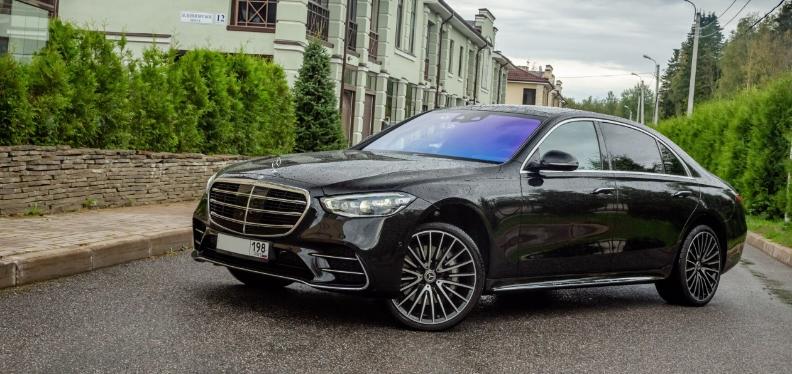
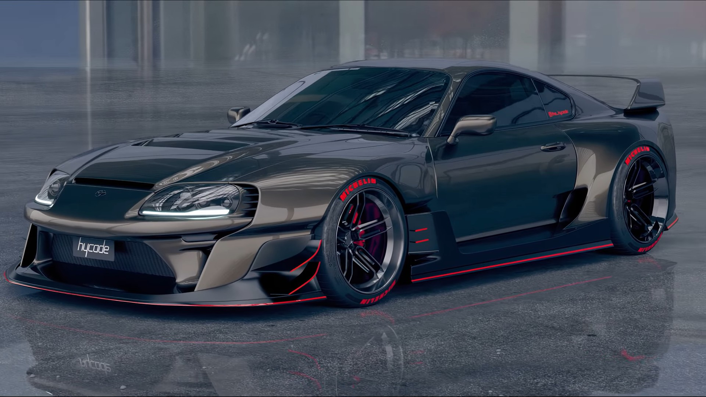
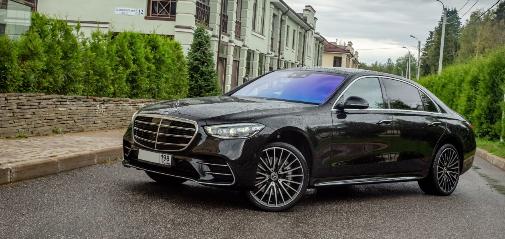
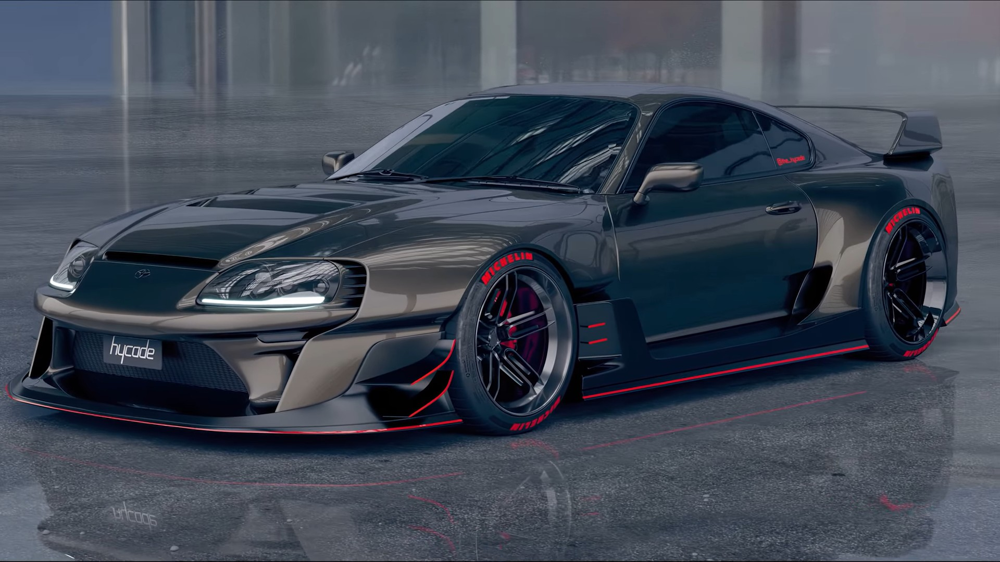

Mashina (lotincha: machina — qurol, qurilma) — bir turdagi harakat energiyasini ikkinchi turdagi harakat energiyasiga aylantirish, materiallar yoki axborotlarni oʻzgartirish, aloqa oʻrnatish, yuk va odamlarni tashish uchun moʻljallangan mexanizm yoki mexanizmlar majmui. Jamiyatdagi ishlab chiqarish kuchlarining eng muhim tarkibiy qismi, yirik mashinali ishlab chiqarishning moddiy negizi, aloqa va transportning asosiy vositasi hisoblanadi. M. — fantexnika inqilobining asosi. M. ayni paytda ham mehnat quroli, ham mehnat mahsuloti hisoblanadi. Inson kadimdan oʻz mehnatini yengillashtirish uchun turli-tuman qurol va qurilmalarni yaratishga urinib kelgan. Mola, omoch, charxpalak, urchuq, charh, dug, toʻquvchilik dastgohlari (doʻkonlari), choʻt, palaxmon, piltatoʻp, shamol tegirmoni va boshqa vositalar M. yaratish borasidagi urinishlar edi. Shuning uchun ilgari M. inson mehnatini osonlashtiradigan mexanik tizim deb tushunilgan. Bora-bora u insonning aqliy mehnatini va fiziologik vazifasini ham bajaradigan murakkab tizimga aylandi. M.dan foydalanish mehnatning maz-muni va tarzini oʻzgartirish, xalq xujaligining barcha tarmoqlarida mehnatning darajasini bir-biriga yaqinlashtirish va rivojlantirish, ish unumdorligini oshirish va shu asosda yuqori iqtisodiy samaradorlikka erishish, mehnatni mashaqqatli va zerikarli gomushdan ishtiyoq bilan bajariladigan ehtiyojga aylantirishning asosi hisoblanadi.
 


